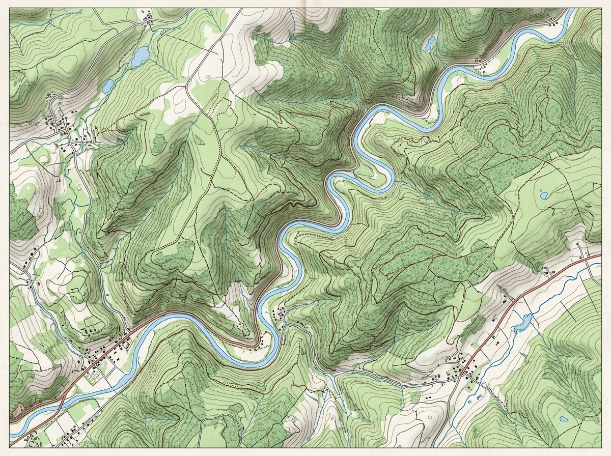
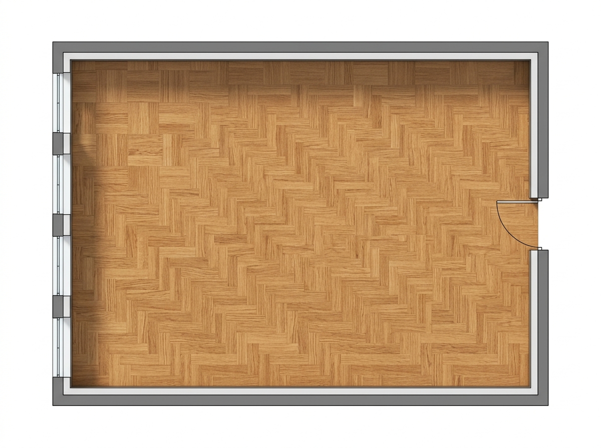

Choisis une activité pour t'entraîner à utiliser, calculer et lire des échelles sur des cartes et des plans.

Mesure des distances réelles sur une carte topographique à l'aide d'une règle virtuelle graduée et d'un tableau de proportionnalité.
Activité disponible
Calcule et configure les dimensions réduites du mobilier de classe (échelle 1:50 ou 1:100) puis place-les sur le plan au sol.
Activité disponibleDétermine l'échelle d'agrandissement ou de réduction en comparant la taille réelle d'insectes à leur taille affichée.
🚧 En cours de création